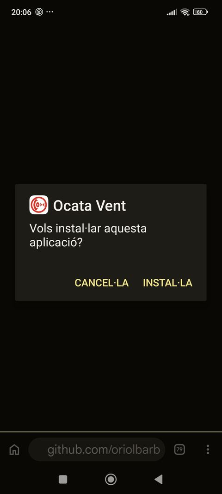
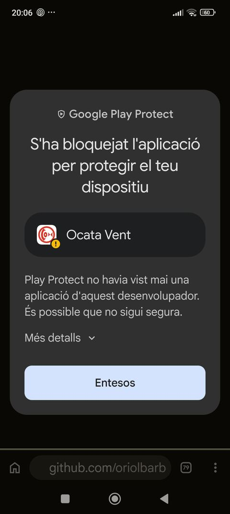
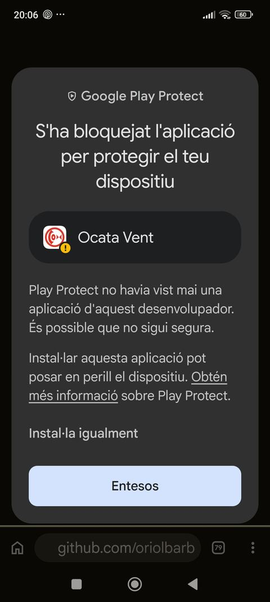
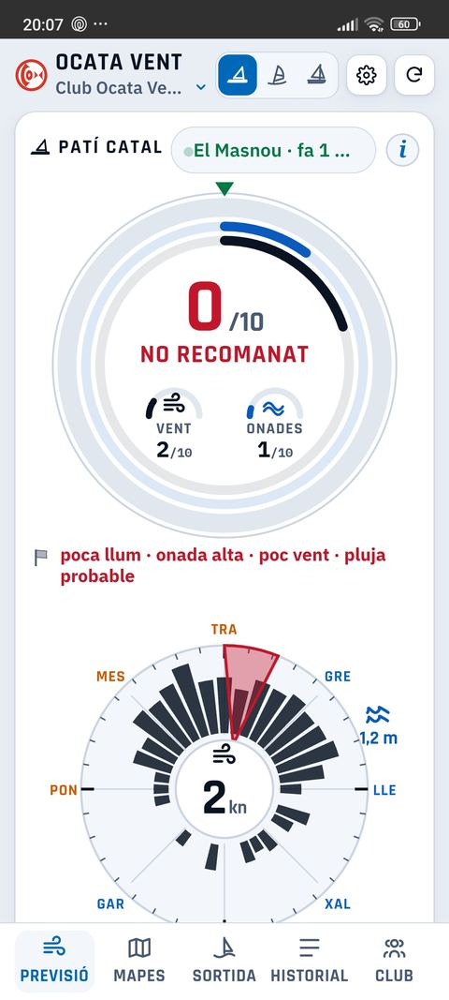
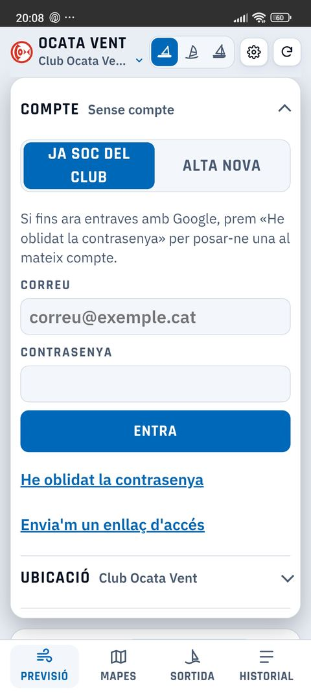
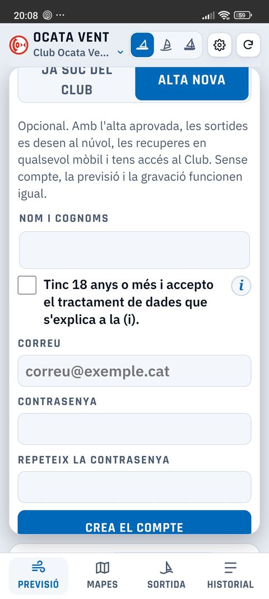
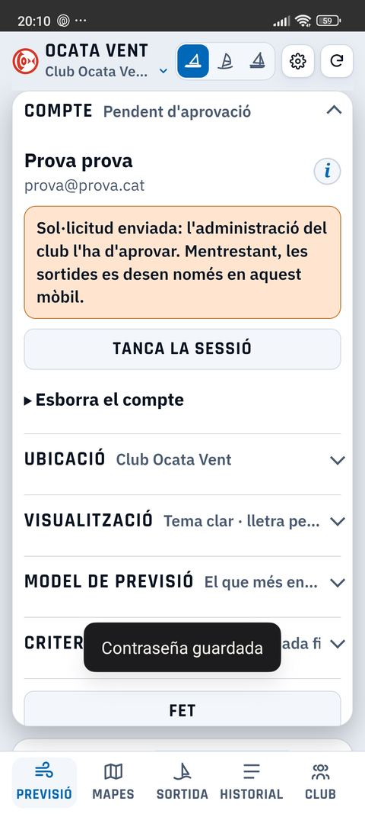
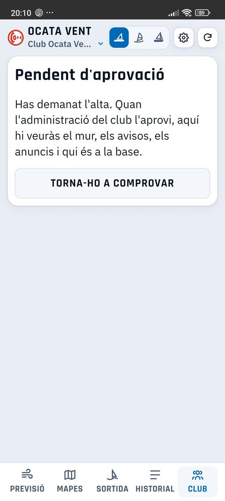

L'app encara no és al Google Play: s'instal·la amb un arxiu. Android et farà alguns avisos; és normal.
Obre aquesta pàgina amb Chrome (no des de WhatsApp) i toca el botó blau de dalt, Descarrega l'APK. Si Android ho demana, permet instal·lar des d'aquesta font.

Obre l'arxiu descarregat i toca Instal·la.

Surt «S'ha bloquejat l'aplicació». Només és perquè Google no coneix encara l'app. Toca Més detalls.

Ara toca Instal·la igualment.

Obre Ocata Vent. Ja veus la previsió, i la pots fer servir sense compte.
El compte és opcional: amb l'alta aprovada, les sortides es desen al núvol i tens accés a la pestanya Club (mur, avisos, anuncis i base).

Toca la roda de Configuració ▸ Compte i tria Alta nova.

Nom i cognoms, correu i contrasenya (dues vegades). Marca que tens 18 anys o més i accepta el tractament de dades. Toca Crea el compte.

Surt «Pendent d'aprovació»: l'administració del club ha d'acceptar l'alta. Mentrestant, les sortides es desen només al teu mòbil.

A la pestanya Club, toca Torna-ho a comprovar. Quan l'alta s'aprovi, hi veuràs el mur, els avisos, els anuncis i qui és a la base.
Ocata Vent · Club Ocata Vent, El Masnou